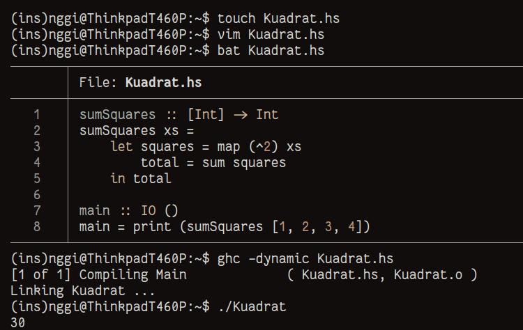

+------------------------------------------------------------------------------+ | | | $HOME about blog/ paper view-mode.sh | | | +------------------------------------------------------------------------------+ Mengapa Haskell? ____________________________________________________ Haskell [1] adalah bahasa pemrograman fungsional yang terkenal dengan sifatnya yang deklaratif dan kuat dalam tipe data. Saya baru menyentuh Haskell selama beberapa Minggu karena melihat teman-teman yang menggunakan XMonad [2]. Kesan pertama adalah banyak nya "kode cerdas" karena Haskell memperbolehkan dan sering kali menghasilkan kode yang lebih sulit di pahami oleh saya(?) sumSquares :: [Int] -> Int sumSquares xs = sum (map (^2) xs) main :: IO () main = print (sumSquares [1, 2, 3, 4]) Kode di atas menghitung jumlah kuadrat dari setiap elemen dalam list xs. Ini cukup bahkan sangat ringkas, tetapi membingungkan bagi saya yang belum terbiasa dengan fungsi map dan operator (^2). Saya mencoba untuk memecah kode tersebut menjadi beberapa langkah yang lebih eksplisit : sumSquares :: [Int] -> Int sumSquares xs = let squares = map (^2) xs total = sum squares in total main :: IO () main = print (sumSquares [1, 2, 3, 4]) Dalam contoh ini, kita membagi proses menjadi dua langkah : 1. Menghitung kuadrat dari setiap elemen dan menyimpannya dalam variabel squares 2. Menghitung jumlah dari squares Bingung? Saya bahas kode tersebut baris per baris. 1. sumSquares :: [Int] -> Int Baris ini mendeklarasikan tipe dari fungsi sumSquares [Int] berarti fungsi ini menerima sebuah list yang berisi bilangan bulat (integer) -> Int menunjukkan bahwa fungsi ini akan mengembalikan sebuah nilai bilangan bulat 2. sumSquares xs = Ini adalah definisi fungsi sumSquares xs adalah parameter yang mewakili list dari bilangan bulat yang akan di proses 3. let squares = map (^2) xs Kata kunci let di gunakan untuk mendeklarasikan variabel lokal squares adalah nama variabel yang kita buat untuk menyimpan hasil dari operasi berikut map (^2) xs adalah fungsi yang digunakan untuk menerapkan operasi kuadrat (^2) pada setiap elemen dalam list xs map adalah fungsi yang mengambil dua argumen. sebuah fungsi (dalam hal ini, (^2) yang berarti "kuadrat") dan sebuah list (xs) Hasil dari map adalah list baru yang berisi kuadrat dari setiap elemen di xs 4. total = sum squares Mendeklarasikan variabel total sum squares adalah fungsi yang menghitung jumlah dari semua elemen dalam list squares yang baru saja kita buat Fungsi sum menjumlahkan semua bilangan dalam list dan mengembalikan hasilnya sebagai nilai. 5. in total Kata in di gunakan untuk menunjukan bahwa kita ingin mengembalikan nilai dari ekspresi yang kita buat sebelum nya total adalah hasil akhir yang akan dikembalikan oleh fungsi sumSquares, yaitu jumlah dari kuadrat semua elemen dalam list xs 6. main :: IO () Menunjukan bahwa main adalah fungsi yang menghasilkan efek samping (output) dan tidak mengembalikan nilai. Tanda kurung () adalah tipe unit di Haskell mirip dengan void di beberapa bahasa pemrograman lain 7. print Di gunakan untuk mencetak hasil ke layar 8. sumSquares [1, 2, 3, 4] Fungsi yang telah kita definisikan sebelum nya, fungsi ini menghitung jumlah dari kuadrat dalam daftar [1, 2, 3, 4] Ketika sumSquares dipanggil dengan daftar tersebut, ia akan menghitung kuadrat dari setiap angka (1, 4, 9, 16) dan kemudian menjumlahkan hasilnya  Sampai sini sudah ada gambaran untuk menulis Haskell pertama teman-teman? Banyak anggota forum Haskeller [3] sering kali mengatakan : "There are times when, while I'm write the code, whether it’s been a week or even just three days, I forget the purpose of it." Mengapa? Hal-hal dalam Haskell cenderung sangat abstrak, bahkan relatif terhadap bahasa fungsional lainnya. Argumen saya adalah orang yang datang dari latar belakang matematikawan dan fisikawan "mungkin" akan lebih cepat memahami konsep paradigma yang di tawarkan oleh Haskell itu sendiri. "Bayangkan seseorang yang sudah mahir memasak. Mereka mungkin dapat dengan cepat memahami resep baru, bahkan jika bahan-bahannya asing, karena mereka sudah terbiasa dengan teknik dasar memasak. Namun, seseorang yang tidak memiliki pengalaman memasak mungkin harus belajar dari awal tentang cara menggunakan peralatan dan memahami langkah-langkah dalam resep tersebut." [1] https://www.haskell.org/ [2] https://xmonad.org/ [3] https://en.wiktionary.org/wiki/Haskeller ________________________________________________________________________________ Sukalaper © 2022, All rights reserved.